Bei dieser alt hergebrachten handwerklichen Herstellungsweise werden von den Frauenkooperativen geerntete Früchte und Arganmandeln von Hand mittels Steinmühlen (ohne Maschinen) in den Dörfern und in Familienverbünden/kleinen Manufakturen gepresst. Heute besitzen die Kooperativen selbst kleine Schneckenpressen, die eine aufwendige Handpressung des Arganöls nicht mehr nötig machen. Sie produzieren ihr Öl selber und vermarkten es weltweit.
 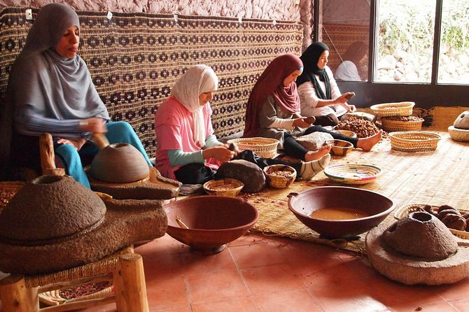
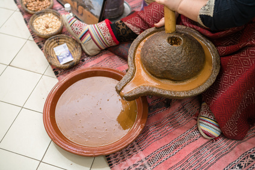
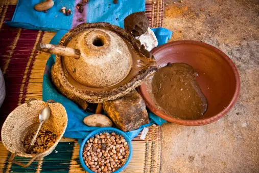
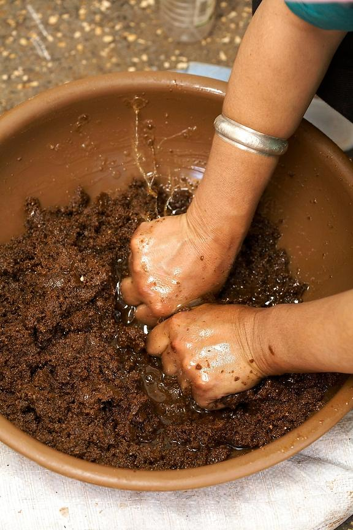
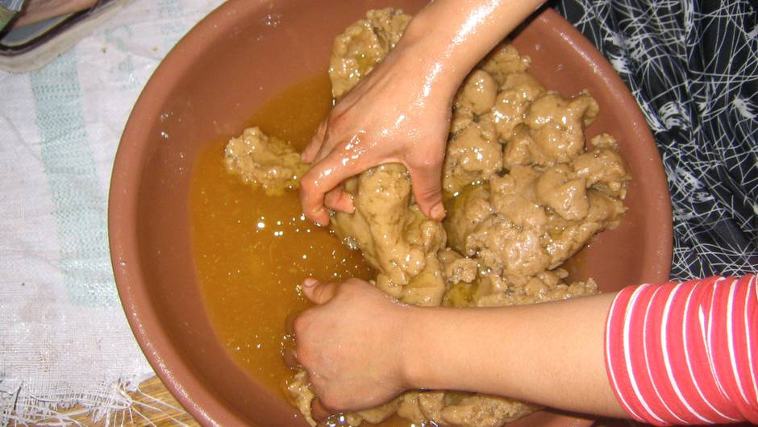
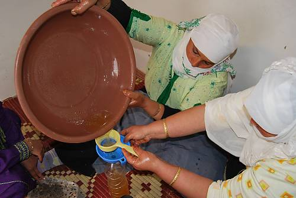
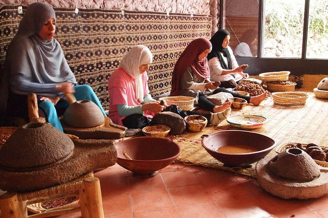
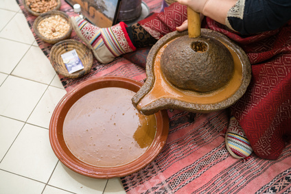
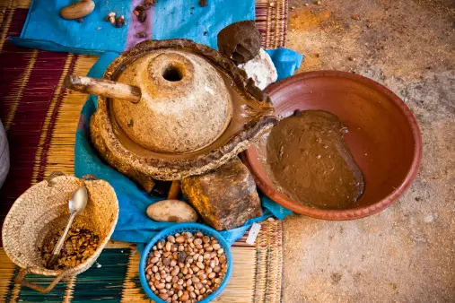
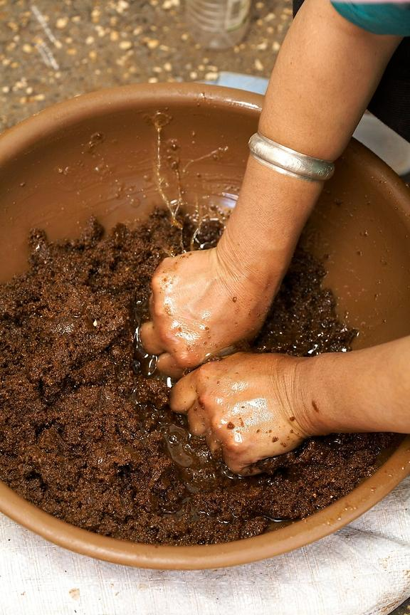
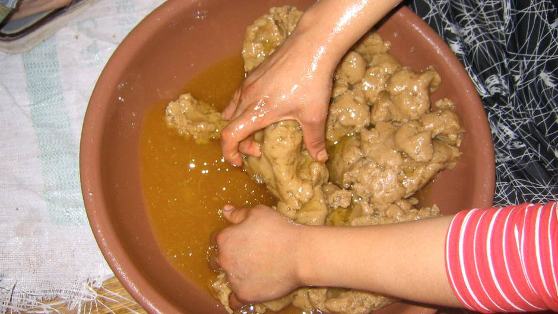
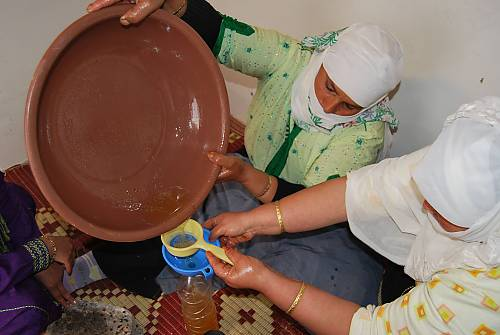